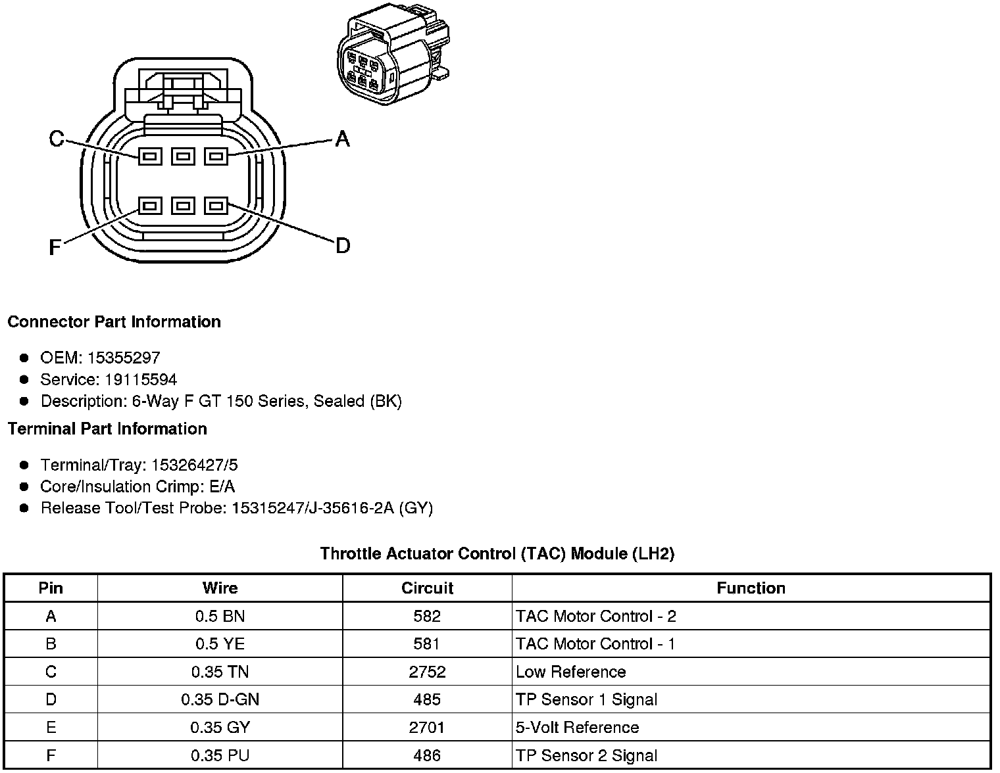
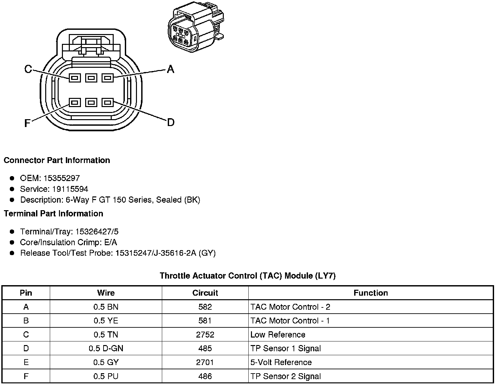

Operation CHARM
: Car repair manuals for everyone.
Home
>>
Cadillac
>>
2008
>>
SRX AWD V8-4.6L
>>
Repair and Diagnosis
>>
Diagrams
>>
Connector Views
>>
Electronic Throttle Actuator
Electronic Throttle Actuator
Component Connector End Views
Throttle Actuator Control (TAC) Module (LH2 - Gas, 8 Cylinder, 4.6L, SFI, V8, DOHC, HO)

Throttle Actuator Control (TAC) Module (LY7 - Gas, 6 Cylinder, 3.6L, SFI, V6)
